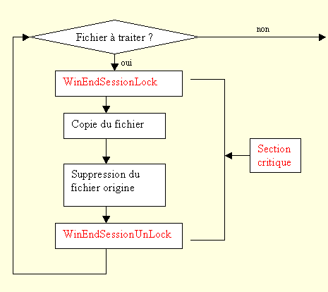

La fonction WinEndSessionLock défini le début d’une section critique. Après cette instruction, si Windows demande la fermeture de la tâche, celle-ci répond « non ».
Module "ysystemex.dhop"
Ptr WinEndSessionLock ( caractère , touche )
Paramètres
Caractère
Caractère qui sera mis dans le tampon du clavier si Windows demande la fermeture de la tâche pendand la section critique. (ex : $e8 pour la touche F9).
Pour savoir si une demande de fermeture est arrivée pendant la section critique, voir WinEndSessionUnLock.
Touche
Mettre 0.
Retour
|
0 |
Pas d’erreur |
|
Autre |
Il y a une demande de fermeture de la tâche. Dans ce cas, il faut appeler WinEndSessionUnLock et quitter le programme. |
Remarques
Attention, la section critique doit être la plus courte possible. Elle se termine par l’instruction WinEndSessionUnLock . Si la section critique est trop longue, Windows considère que la tâche est plantée et la tue sans que celle-ci puisse s’y opposer.
Dans l’exemple cité dans l’introduction il ne faudrait surtout pas mettre tout le traitement du répertoire en section critique. Si le nombre de fichiers à traiter est trop important, la durée de la section critique risque d’être trop longue. La section critique est donc placée au traitement de chaque fichier. Si le programme est interrompu après un fichier, cela n’est pas grave, les fichiers restants seront traités à la prochaine exécution de la tâche.
L’algorithme final sera :

Exemple
Voir le sous-projet EvFolder du projet Exemples. Ci-dessous un extrait du code de ce programme.
; on veut protéger cette partie du code
; il faut qu'elle soit la plus courte possible
; si st <> 0 c'est qu'il y a eu une demande d'arrêt de la tâche
st = WinEndSessionLock ($E8,0)
if st <> 0
freturn st
endif
;on copie le fichier dans un autre répertoire
st = WinMoveFile( left(fic) , left(fic2) )
if st = FALSE
;retour au mode normal
;si st <> 0 c'est qu'il y a eu une demande d'arrêt de la tâche
st = WinEndSessionUnlock
if st <> 0
freturn st
endif
...
else
;sinon la copie est ok
display " Déplacement vers " & left(fic2) & " ok "
;on lance le programme qui va traiter ce fichier
ping ( "EvFolderFile" , left(fic2) )
programCall(progcall,show,appel)
;retour au mode normal
;si st <> 0 c'est qu'il y a eu une demande d'arrêt de la tâche
st = WinEndSessionUnlock
if st <> 0
freturn st
endif
endif
Voir